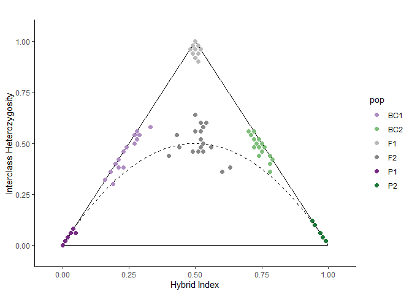
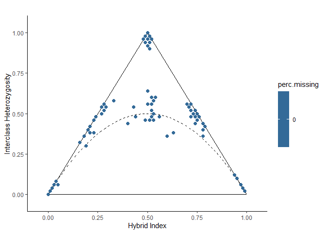

triangulaR is a package for identifying ancestry-informative markers (AIMS), calculating hybrid indices, interclass heterozygosity, and building triangle plots. Check out the articles at the package website for background on triangle plots, or stay here for a quick start on how to use the package.
Installation
You can install the development version of triangulaR from GitHub with:
# install.packages("devtools")
devtools::install_github("omys-omics/triangulaR")Citation
If you publish any work that uses triangulaR, please consider citing the following paper (currently available as a preprint): https://www.biorxiv.org/content/10.1101/2024.03.28.587167v1
How to use this package:
triangulaR builds on the functionality of vcfR to analyze SNP data in R. The first step is to read in the data from a vcf file.
Step 1: Read in data
It is expected that the data have already filtered for quality (e.g. setting genotype quality and depth thresholds, removing individuals and sites with high missing data, etc.). For help with this step, see SNPfiltR.
library(triangulaR)
#> Loading required package: ggplot2
#> Warning: package 'ggplot2' was built under R version 4.0.5
#> This is triangulaR v.0.0.0.9000
#>
#> /\
#> / \
#> / \
#> /______\
#>
#> Usage information is available at: https://github.com/omys-omics/triangulaR/
#>
#> Please cite the following if you use triangulaR in a publication:
library(vcfR)
#>
#> ***** *** vcfR *** *****
#> This is vcfR 1.14.0
#> browseVignettes('vcfR') # Documentation
#> citation('vcfR') # Citation
#> ***** ***** ***** *****
# Read in data
data <- read.vcfR("../SecondaryContact/gen.19000.vcf", verbose = F)
data
#> ***** Object of Class vcfR *****
#> 420 samples
#> 1 CHROMs
#> 1,788 variants
#> Object size: 6.2 Mb
#> 0 percent missing data
#> ***** ***** *****
# Or, use example vcfR object
example.vcfR
#> ***** Object of Class vcfR *****
#> 120 samples
#> 1 CHROMs
#> 6,177 variants
#> Object size: 7.1 Mb
#> 0 percent missing data
#> ***** ***** *****Step 2: Make a popmap
A popmap is a data.frame with two columns labeled “id” and “pop”. Each name of each sample in the vcfR object should be included in the “id” column. All individuals in the vcfR object should be included in the popmap, and vice versa. Each individual needs to be assigned to a population. Every individual must be assigned to a population, and there can be any number of populations. IDs and pops should be character strings.
# Here is an example of what a popmap should look like
print(head(example.popmap))
#> id pop
#> 1 i55 P1
#> 2 i159 P1
#> 3 i245 P1
#> 4 i246 P1
#> 5 i264 P1
#> 6 i526 P1
print(tail(example.popmap))
#> id pop
#> 115 bc2.15 BC2
#> 116 bc2.16 BC2
#> 117 bc2.17 BC2
#> 118 bc2.18 BC2
#> 119 bc2.19 BC2
#> 120 bc2.20 BC2Step 3: Choose sites above an allele frequency difference threshold
Theoretically, the hybrid index of an individual represents the proportion of ancestry received from each parental population. In practice, one way to calculate hybrid indices is by identifying loci with allele frequency differences above a chosen threshold in the parental populations and scoring individuals by allele counts at those loci. There is a balance between using a small amount of highly diagnostic site (e.g. fixed differences) and a large amount of less diagnostic sites. I recommend trying difference values for the allele frequency difference threshold to see how this value affects results.
# Create a new vcfR object composed only of sites above the given allele frequency difference threshold
example.vcfR.diff <- alleleFreqDiff(vcfR = example.vcfR, pm = example.popmap, p1 = "P1", p2 = "P2", difference = 0.9)
#> [1] "50 sites passed allele frequency difference threshold"Step 4: Calculate hybrid index and heterozygosity for each sample
Once sites above the allele frequency difference threshold have been identified, hybrid index and heterozygosity for each sample can be calculated.
# Calculate hybrid index and heterozygosity for each sample. Values are returned in a data.frame
hi.het <- hybridIndex(vcfR = example.vcfR.diff, pm = example.popmap, p1 = "P1", p2 = "P2")
#> [1] "calculating hybrid indices and heterozygosities based on 50 sites"Step 5: Visualize results as a triangle plot
# Generate colors (or leave blank to use default)
cols <- c("#af8dc3", "#7fbf7b", "#bababa", "#878787", "#762a83", "#1b7837")
# View triangle plot
triangle.plot(hi.het, colors = cols)
Step 6: Color triangle plot by missing data
The data.frame returned by the hybridIndex function also contains the percent of missing data in each individual. View the triangle plot with samples colored by percent missing data to investigate its effect.
# There is no missing data in this dataset, so all samples have the same color
missing.plot(hi.het)